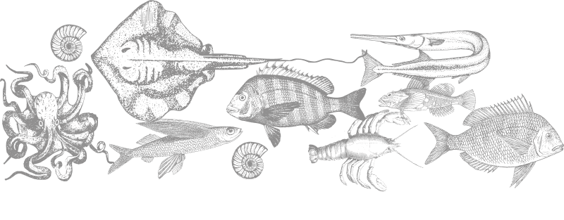

Треска
Лосось
Скумбрия
Голубая мидия
Коричневый краб
Осьминог
Норвежский омар
Морской гребешок
Морской черт
Палтус
- Сезон Круглый год, но лучше всего осенью.
- Диапазон улова Вдоль норвежского побережья.
- Питательные вещества Витамины А, В1, В6, В12, D, E, РР, натрий, калий, кальций, железо, магний, фосфор.
Треска
Треска – это морская рыба семейства осетровых, которая водится в умеренной области вод Атлантического океана. В длину рыба может быть до двух метров, промысловые же особи имеют примерно 40-80 см в возрасте от 30 до 10 лет. Атлантическая треска размножается у берегов Норвегии, а откармливается в Баренцевом море и на мелководье у Шпицбергена. Основные нерестилища этой трески находятся у Лофотенских островов (Норвегия).
- Сезон С июня по сентябрь
- Диапазон улова В Олесунне, Бергене и на Лофотенских островах.
- Питательные вещества Витамин В12, а также фосфор, селен, хром, йод, кальций, магний.
Лосось
С тех пор, как в XIX веке британцы открыли для себя норвежские реки, изобилующие лососем, сюда ежегодно стремятся тысячи рыболовов, да и сами норвежцы охотно участвуют в промысле лососевой рыбы. Однако, если раньше эта рыба была для людей главным источником пищи, то сегодня это больше престижный трофей.
- Сезон С июня, и длится по ноябрь.
- Диапазон улова Вдоль норвежского побережья а также в проливе между Скандинавским полуостровом и Ютландией.
- Питательные вещества Витамины В12, D, B2, B5, B6, РР, а также фосфор, селен, хром, йод, кальций, магний.
Скумбрия
В Норвегию часто едут для того чтобы насладиться не только природой, но и морской рыбалкой, которая не требует лицензии и является бесплатной. Здесь можно испытать спортивный азарт и получить множество незабываемых впечатлений. Не смотря на то, что в Норвегии скумбрия встречается по всему побережью, больше всего она распространена в средних и южных областях, например в Осло-фьорде. В северных районах ее значительно меньше.

- Сезон С лета по осень.
- Диапазон улова Вдоль норвежского побережья.
- Питательные вещества Натрий, калий, кальций, магний, йод, витамины В1, В2, B6, PP.
Голубая мидия
Человечество питается мидиями испокон веков. Они считаются древним деликатесом. Мидия — двустворчатый моллюск — водится почти во всех прибрежных зонах Мирового океана. Ежегодно во всем мире добывается более 12 млн тонн моллюсков.

- Сезон Круглый год, но лучше всего осенью.
- Диапазон улова Вдоль норвежского побережья.
- Питательные вещества Белок, витамин B12, селен
Коричневый краб
Чтобы поймать коричневых крабов, вам не понадобится больше, чем фонарик и быстрые рефлексы - последнее, что видят коричневые крабы, - это вспышка и стреляющая рука. Но вы должны действовать быстро: через секунду или две краб понимает, что происходит, и использует свои когти, чтобы ущипнуть Вас изо всех сил, и он не отпустит Вас легко. Таким образом, ловля крабов не только обеспечивает вкусную еду, но и вызывает выброс адреналина.
- Сезон Круглый год, но лучше всего летом.
- Диапазон улова Вдоль норвежского побережья.
- Питательные вещества Белок, магний, кальций, натрий, калий, железо, фосфор, медь, селен и марганец, витаминов группы В, А, С, Е, К, РР.
Осьминог
Охота на этого умного хищника возможна круглый год, но лучше выбирать более теплое время года, когда он охотится на отмелях. Поиском своих жертв осьминог занимается в темное время суток. Осьминога считают деликатесом. В средиземноморских странах его готовят, как основное блюдо или закуску.

- Сезон Весна, лето.
- Диапазон улова Вдоль норвежского побережья.
- Питательные вещества Белок, витамин B12
Норвежский омар
В кулинарии задняя часть норвежского омара считается деликатесом, в то время как его тонкие клешни в отличие от других видов омаров не содержат пригодного к употреблению мяса. Норвежский омар часто предлагается под разными названиями. В Италии его называют «скампи», во Франции — «лангустин».
- Сезон Круглый год.
- Диапазон улова Вдоль норвежского побережья.
- Питательные вещества Йод, марганец, железо и другие важными для здоровья человека микроэлементами.
Морской гребешок
Морской гребешок относится к семейству морских двустворчатых моллюсков. Среди многообразия морепродуктов уникальными качествами обладает морской гребешок – головоногий моллюск, в котором практически отсутствует жир, а вот белка предостаточно. Из 350 видов этого семейства моллюсков съедобными являются только три: Lima, Spondylus и Pecten.
- Сезон Круглый год
- Диапазон улова У побережья областей Сон-ог-Фьоране и Мёре-ог-Ромсдал
- Питательные вещества белок витамин B12 селен
Морской черт
Норвежцы приспособились ловить морского черта сетью. На крючок словить взрослую особь можно, но сделать это достаточно сложно из-за крупных размеров. Рыба любит глубину. В морях она обитает на глубине до 600 метров. И если поймать такого красавца можно, то приготовить – задача не из простых. Съедобная часть морской рыбы – только хвост. При этом голова с сотнями острых зубом составляет половину всей длины. При этом по всей длине спины морской черт так и норовит уколоть рыбака острыми тонкими колючками.
- Сезон С декабря по апрель (время нереста, когда рыба поднимается выше).
- Диапазон улова У берегов Норвегии, Фареры, водный раздел с Гренландией.
- Питательные вещества Высокое количество витаминов А и Д,
Палтус
Палтус – разновидность промысловой морской рыбы, обитающая в глубинах норвежских вод. Крупные особи (весом до 300 кг, длиной до 3 метров) обитают исключительно на дне моря, зарываясь в песок. Глубина обитания – не менее 300 метров от поверхности воды. Более мелкие особи обитают в прибрежных водах. Пользу палтуса невозможно переоценить. Вероятность ловли очень крупной, трофейной особи, достаточно низкая. Рыба медленно растет, поэтому процесс ловли этого вида рыбы строго контролируется норвежскими должностными органами.
- Уникальное разнообразие
- Экологическое потребление
- Лучшее качество
- Идеальные условия для выращивания
Экстремальные условия для человека. Идеальные условия для рыб.
Гольфстрим, несущий теплую воду из Мексиканского залива через Атлантический океан, течет на север вдоль норвежского побережья в прозрачную, чистую ледяную воду Арктики. Это создает идеальные условия для невероятно богатой морской экосистемы.
Мелкая рыба, большая рыба, моллюски и другие формы жизни. Некоторые из них - местное население, другие - мигрируют или проеплывают через земной шар. Некоторые предпочитают холодное открытое море, другие живут в тихих глубоких фьордах, защищенных стеной островов и шхер. Каждый из них играет свою роль в сложном и увлекательном морском жизненном цикле.
Разнообразие морепродуктов из этой среды уникально. Это одна из основных причин, почему Норвегия является вторым по величине экспортером морепродуктов в мире. И есть также причина, по которой повара и знатоки всего мира выбирают морепродукты из Норвегии: вам будет сложно найти такой же выбор и качество где-либо еще.

Лучшее качество морепродуктов
Норвежские морепродукты - это качественные морепродукты, и мы рады ими поделиться. Вот почему нашими морепродуктами наслаждаются во всем мире. Международное значение этой отрасли наглядно демонстрирует тот факт, что норвежские морепродукты путешествуют примерно в 150 стран. Мы второй по величине экспортер морепродуктов в мире.
Экологическое потребление
Великолепная прибрежная природа Норвегии и разнообразие жизни, которое она поддерживает, - это основа нашего существования с каменного века. Мы знаем, что обязаны передать это будущим поколениям. Море - это дар, который продолжает дарить, но только до тех пор, пока мы продолжаем уважать его и бережно относимся к тому, что нам было дано.
Идеальные условия выращивания
Норвегия имеет одну из самых передовых и хорошо зарекомендовавших себя систем устойчивого развития и управления как в рыболовстве, так и в аквакультуре. Это не случайность, а систематическая работа на всех уровнях, обеспечивающая безопасность потребителей и благополучие рыб.
Большой упор на благополучие животных и строгие правила означают, что наши морепродукты неизменно высокого качества и безопасны для употребления. Производство является экологически безопасным и ответственным, оставляя минимальный след на окружающую среду.

Вы получаете самые лучшие морепродукты Неважно, что это за морепродукты, потому что они норвежские, а значит - самого лучшего качества.
В Норвегии холодно. Очень холодно.
- Связаться с нами: mail@seafood.no
- Телефон: +47 77 60 33 33
-
Норвежский совет по морепродуктам:
Stortorget 1
PO Box 6176
N-9291 Tromsø